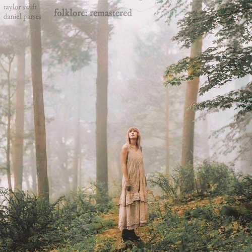

Timeline
2008: heard music for the first time
2015: started piano lessons
2017: learned to play trombone
2018: joined a local choir
2021: quit trombone to join school choir
2022: discovered new artists and genres to inspire me
2024: started voice lessons
Inspiration
Taylor Swift is an artist who inspires me. She started from a small town in Pennsylvania and became one of the most famous musical artists ever. She explores a lot of different genres in her music, like pop, country, and indie folk. She plays piano and sings like me, and she also plays guitar which is a goal I have for the future. I think she is the most influential singer of this generation.
Other artists that inspire me include Noah Kahan, Jordy Searcy, and Lizzy McAlpine

Experience
I have preformed in countless concerts, recitals, and preformances for both singing and piano. I try to practice as much as I can and I take lessons for both voice and piano. I love listening to music becuase it calms me down and moivates me to get better at my own instruments.
Goals
I want to get to the point in piano where I sightread and play any song I want, and maybe learn a concerto. For singing I want to improve my range and my tone, which will probably take a lot of practice. Another goal I have is to learn guitar so I can explore differernt genres of music.